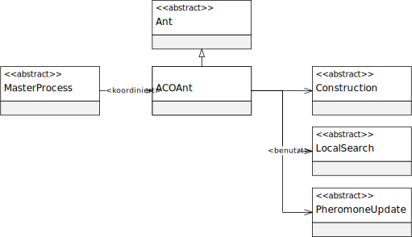

类 ACOAnt<S extends AbstractSolution<P>,P extends AbstractProblem>
java.lang.Object
eu.andredick.aco.ant.AbstractAnt<S>
eu.andredick.aco.ant.ACOAnt<S,P>
实现蚂蚁组件 通过实现类
提供从 MasterProcess 组件继承的方法。可被(参见
设计接口，其中多个类的方法在接口集中提供。
蚂蚁对象还具有定义其状态的变量。
AbstractAnt 的抽象方法.提供从 MasterProcess 组件继承的方法。可被(参见
AbstractMasterProcess) 调用。设计接口，其中多个类的方法在接口集中提供。
蚂蚁对象还具有定义其状态的变量。

-
字段概要
字段修饰符和类型字段说明protected AbstractConstruction实现解的启发式构造的任意组件protected AbstractLocalSearch实现局部搜索的任意组件protected P要找的解（路径）的抽象问题protected S蚂蚁的当前解（路径）。protected AbstractPheromoneUpdate实现信息素标记的任意组件 -
构造器概要
构造器构造器说明ACOAnt(P problem, AbstractPheromoneUpdate updateRule, AbstractConstruction constructionStrategy, AbstractLocalSearch localSearchStrategy) 构造函数 -
方法概要
修饰符和类型方法说明void启动蚂蚁解的构造。提供蚂蚁解的目标函数值。根据蚂蚁的状况，提供蚂蚁的解决方案.
它可以是新杰，改进或空解
根据实际情况，也可能提供不完整的解.void通过局部搜索开始改进构造好的蚂蚁解。void开始在问题实例上标记信息素。voidresetAnt()为下一次迭代更新蚂蚁的状况。voidsetSolution(S solution) 为蚂蚁设置解.
该方法用于用一只蚂蚁的解覆盖另一只蚂蚁的解.
-
字段详细资料
-
problem
要找的解（路径）的抽象问题 -
solution
蚂蚁的当前解（路径）。
解可能不完整。 -
updateRule
实现信息素标记的任意组件 -
constructionStrategy
实现解的启发式构造的任意组件 -
localSearchStrategy
实现局部搜索的任意组件
-
-
构造器详细资料
-
ACOAnt
public ACOAnt(P problem, AbstractPheromoneUpdate updateRule, AbstractConstruction constructionStrategy, AbstractLocalSearch localSearchStrategy) 构造函数- 参数:
problem- 要找到解决方案或路径的抽象问题.updateRule- 实现信息素标记的任意组件constructionStrategy- 实现解的启发式构造的任意组件localSearchStrategy- 实现局部搜索的任意组件
-
-
方法详细资料
-
constructSolution
启动蚂蚁解的构造。
为此，使用分配给蚂蚁的启发式构造组件。
该方法由主进程调用。
由 ant 创建的解应保留为对象变量。- 指定者:
constructSolution在类中AbstractAnt<S extends AbstractSolution<P>>- 另请参阅:
-
evaluateSolution
提供蚂蚁解的目标函数值。
该方法由主进程调用。
蚂蚁的状况可能包括不完整的解!- 指定者:
evaluateSolution在类中AbstractAnt<S extends AbstractSolution<P>>- 返回:
- 蚂蚁解的目标函数值
-
markPheromone
开始在问题实例上标记信息素。
为此，使用为蚂蚁分配的信息素标记组件。
该方法由主进程调用。- 指定者:
markPheromone在类中AbstractAnt<S extends AbstractSolution<P>>- 另请参阅:
-
localSearch
通过局部搜索开始改进构造好的蚂蚁解。
为此，使用分配给 ant 的局部搜索组件。
该方法由主进程调用。- 指定者:
localSearch在类中AbstractAnt<S extends AbstractSolution<P>>- 另请参阅:
-
resetAnt
为下一次迭代更新蚂蚁的状况。
为此，先前的蚂蚁解被空解取代。
该方法由主进程调用。- 指定者:
resetAnt在类中AbstractAnt<S extends AbstractSolution<P>>
-
getSolution
从类复制的说明:AbstractAnt根据蚂蚁的状况，提供蚂蚁的解决方案.
它可以是新杰，改进或空解
根据实际情况，也可能提供不完整的解.- 指定者:
getSolution在类中AbstractAnt<S extends AbstractSolution<P>>- 返回:
- 蚂蚁的解
-
setSolution
从类复制的说明:AbstractAnt为蚂蚁设置解.
该方法用于用一只蚂蚁的解覆盖另一只蚂蚁的解.- 指定者:
setSolution在类中AbstractAnt<S extends AbstractSolution<P>>- 参数:
solution- 新解
-